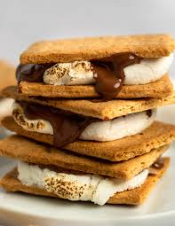

Smores Recipe

Description
S'mores, a beloved campfire treat, evoke memories of crackling fires under
starry skies. Imagine goldeen marshmallows, toasted to perfect, sandwiched
between graham crackers and and melted chocolate. Whether your are amping
or simply craving nostalgia, s'mores bring bring warmth to both heart and
palate.
Here’s how you can make them:
Ingredients
- Graham crackers
- Marshmallows
- Milk Chocolate bars
Steps
- Prepare the Marshmallows:
- Skewer marshmallows onto sticks or skewers
-
Hold them over an open flame (campfire, stovetop, or girll) until they
turn golden brown and slightly crispy on the outside.
- Assembly you S'mores:
- Break a graham cracker in half to create two squares.
- Place a piece of milk chocolate on one graham cracker square.
- Slide the toasted marshmallow onto the chocolate.
- Top with the other graham cracker square to create a sandwich.
- Enjoy!
-
The heat from the marshmallow will melt the chocolate, creating a
gooey, irresistible treat
-
Take a bite and savor the combination of sweet, crunch, and creamy
flavors.